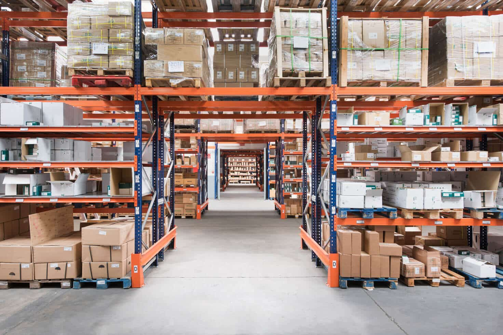

La logística es el conjunto de actividades relacionadas con la planificación, el almacenamiento y el movimiento de materiales y productos desde su origen hasta su destino. En una empresa manufacturera, permite coordinar la recepción de materias primas, su distribución hacia las áreas de producción, el almacenamiento de productos terminados y la entrega de los pedidos a los clientes.
En una fábrica de productos plásticos, una adecuada gestión logística permite garantizar la disponibilidad de resinas, pigmentos, empaques y otros materiales necesarios para fabricar los productos. También facilita la organización de los almacenes y el cumplimiento de las fechas de entrega.
El inventario es el conjunto de materiales, componentes y productos que una empresa mantiene almacenados para utilizarlos en sus operaciones o satisfacer la demanda de sus clientes. Su administración busca mantener cantidades suficientes para garantizar la continuidad de la producción sin generar acumulaciones innecesarias ni costos excesivos de almacenamiento.
En una empresa manufacturera se pueden encontrar inventarios de materias primas, productos en proceso y productos terminados. Cada uno cumple una función diferente dentro del sistema productivo.
Está compuesto por los materiales que se utilizan para fabricar los productos. En una fábrica de plásticos puede incluir resinas, pigmentos, aditivos y materiales de empaque. Su disponibilidad es fundamental para evitar interrupciones en la producción.
Incluye los productos que se encuentran en alguna etapa de fabricación, pero que todavía no están terminados. Por ejemplo, piezas plásticas moldeadas que deben pasar por inspección, acabado o empaque antes de su liberación.
Está formado por los productos que ya completaron su proceso de fabricación y están disponibles para su despacho. Una adecuada administración permite atender los pedidos de los clientes sin mantener cantidades superiores a las necesarias.
Es la cantidad mínima de existencias que la empresa establece como referencia para mantener el funcionamiento de sus operaciones. Su valor depende del consumo de materiales, los tiempos de reposición y las necesidades de producción. Cuando las existencias se acercan a este nivel, puede ser necesario revisar la disponibilidad y planificar un nuevo abastecimiento.
Es una cantidad adicional de materiales que se mantiene para responder a situaciones imprevistas, como retrasos de los proveedores, aumentos inesperados del consumo o variaciones en la demanda. Su objetivo es disminuir el riesgo de quedarse sin materiales durante las operaciones.
Es el nivel de existencias en el que debe emitirse una nueva orden de compra para evitar que los materiales se agoten antes de recibir el siguiente suministro. Su cálculo considera el consumo esperado durante el tiempo de reposición y, cuando corresponde, el inventario de seguridad.
Una fórmula básica para calcular el punto de pedido es:
Punto de pedido = Consumo promedio durante el tiempo de reposición + Inventario de seguridad.
Por ejemplo, si una fábrica consume 100 kilogramos de resina plástica al día, el proveedor tarda 5 días en entregar el material y la empresa mantiene un inventario de seguridad de 150 kilogramos, el punto de pedido será de 650 kilogramos.
Punto de pedido = (100 × 5) + 150 = 650 kilogramos.
Esto significa que, al alcanzar aproximadamente 650 kilogramos de existencias, la empresa debe solicitar una nueva entrega, siempre que se mantengan las condiciones de consumo y reposición utilizadas en el cálculo.
Ocurre cuando la empresa almacena cantidades superiores a las necesarias para atender sus operaciones o la demanda prevista. Puede generar mayores costos de almacenamiento, ocupar espacio útil, inmovilizar recursos económicos y aumentar el riesgo de deterioro u obsolescencia de los materiales.
Por ejemplo, una fábrica compra una cantidad excesiva de pigmentos que utiliza con poca frecuencia. Como consecuencia, ocupa espacio de almacenamiento y mantiene recursos económicos comprometidos en materiales que tardarán mucho tiempo en consumirse.
Se presenta cuando las existencias disponibles no son suficientes para continuar la producción o atender los pedidos. Puede originarse por errores de planificación, retrasos de los proveedores, registros incorrectos o aumentos inesperados del consumo.
Por ejemplo, si una fábrica se queda sin resina plástica durante un turno de trabajo, las máquinas pueden detenerse y retrasar la fabricación de los productos programados.
La empresa registra las entradas y salidas de resina plástica y verifica periódicamente las existencias. De esta manera, puede identificar cuándo necesita realizar una nueva compra y reducir el riesgo de interrupciones por falta de material.
Los materiales se clasifican y ubican en lugares identificados para facilitar su localización. Esta organización reduce el tiempo de búsqueda, mejora el control de las existencias y disminuye los errores durante la entrega de materiales a producción.
La empresa utiliza el consumo promedio, los tiempos de entrega de los proveedores y el inventario de seguridad para establecer los momentos adecuados de reposición. Esto permite mantener materiales suficientes sin realizar compras innecesarias.
La empresa registra las cantidades fabricadas y las compara con los pedidos pendientes. Así puede organizar los despachos, priorizar las entregas y evitar acumulaciones excesivas de productos terminados.
| Tipo de inventario | Descripción | Utilidad | Ejemplo industrial |
| Materias primas | Materiales que todavía no han sido transformados en el producto final. | Garantizar la disponibilidad de los materiales necesarios para fabricar. | Resina plástica almacenada para producir recipientes. |
| Productos en proceso | Materiales o piezas que ya iniciaron su transformación, pero no han completado la fabricación. | Controlar el flujo de producción entre las diferentes operaciones. | Piezas moldeadas pendientes de inspección y empaque. |
| Productos terminados | Artículos que completaron su fabricación y están disponibles para su despacho. | Atender los pedidos de los clientes y organizar las entregas. | Envases plásticos terminados y empacados. |
| Inventario de seguridad | Cantidad adicional de existencias reservada para afrontar imprevistos. | Reducir el riesgo de interrupciones por retrasos en el suministro o aumentos del consumo. | Resina adicional para responder a demoras del proveedor. |